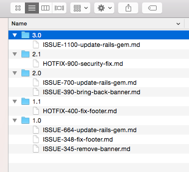
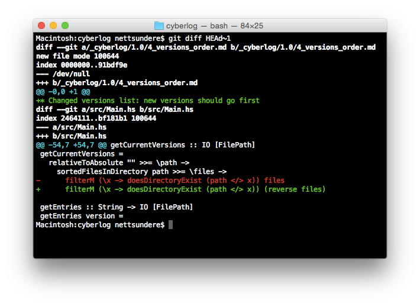
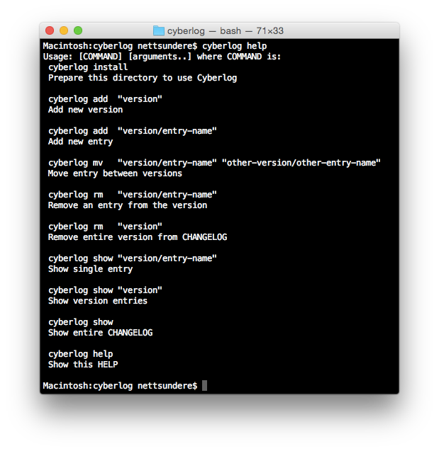

为了减少 changelog 里的冲突，大家已经想过不少办法。可这些办法对我都不管用，只有一个新办法除外。
tl;dr 用目录结构来救场：https://github.com/nettsundere/cyberlog
- 有些人用占位符。好主意。
“在 GitLab，我们是这样解决上面这个问题的：在 changelog 的顶部加上 100 行，每行只有一个连字符，用作占位符。” https://about.gitlab.com/2015/02/10/gitlab-reduced-merge-conflicts-by-90-percent-with-changelog-placeholders/
- 有些人对单个文件使用不同的合并策略（merge=union）。如果 changelog 的每一行永远都独一无二，这个办法不错。可如果 changelog 里有些行的结尾不那么独特，这就是个坏主意了。到时候事情可能就这样出了错，而且谁都不会发现。解决冲突时，所有相似的行都可能被悄无声息地合并成一行。
有时候，我光是修 CHANGELOG 的合并冲突就要花上好几个小时。没错。那我们就用一种叫文件夹的二维文件存储来解决它吧。
我们把一个功能和它的 changelog 条目（一个文件）对应起来，而这个条目属于某个版本（一个文件夹）。

现在，changelog 的这些改动就很好管理了。我们可以 revert 某个功能的提交，什么坏事都不会发生。我们可以往同一个 branch 里再加几个功能，完全不会有冲突。changelog 条目想写多复杂都可以。
现在，你不必再为了不打乱同事的改动，把被编辑器设置删掉的空格一个个补回去了。大家也可以开开心心的，不用每次你又接受一个 pull request 时都去 rebase。

所需软件
其实，用这套做法并不需要任何软件。不过，如果能一次看到整个 changelog 或者某个版本的全部内容，会更方便。所以我决定做一个项目，叫“Cyberlog”。

目前它的功能还很有限。你可以操作条目和版本，可以查看某个版本或某个条目的改动，也可以查看全部改动。
接下来要做的
- 用模板引擎进行定制（给潮人准备的集成）
- SCM 集成（git-blame 等）
- 转换功能（可以把旧的 CHANGELOG 转换成 Cyberlog 支持的新格式）
- 多种呈现方式（说不定你需要 pdf？）
不打算做的
- 编辑条目的功能。编辑日志时，你应该用自己喜欢的文本？编辑器。就连 photoshop 看起来都够用了。我能想象一份 changelog 里满是有意义的图片、视频和音频，用来解释各项改动。
项目源代码（BSD3）在这里：https://github.com/nettsundere/cyberlog
原文发表于 Medium：https://medium.com/@nettsundere/on-reducing-changelog-merge-conflicts-1eb23552630b